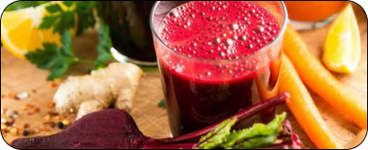
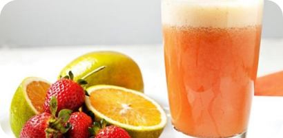
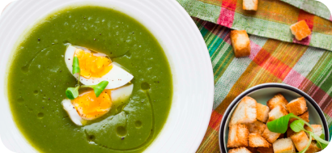
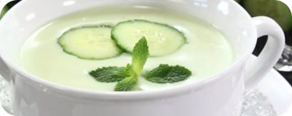
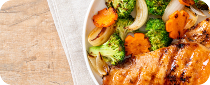
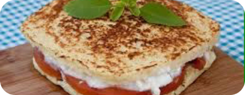
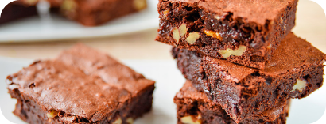
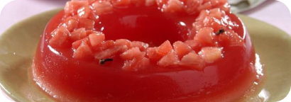
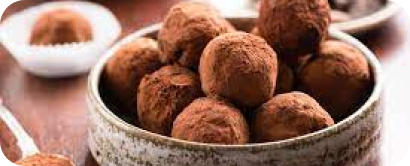

Receitas
detox para uma alimentação mais saudável
Nosso organismo faz naturalmente um processo de eliminação de toxinas, que ocorre principalmente no fígado e no intestino. Porém, com uma dieta detox, podemos dar suporte nutricional do nosso corpo, através da alimentação, como forma de estimular a eliminação de toxinas.
É importante ter em mente que o objetivo principal de uma dieta detox não é o emagrecimento, mas sim a nutrição celular. Mesmo que esse tipo de alimentação traga uma grande quantidade de benefícios ao nosso corpo, as atividades físicas também são fundamentais para quem deseja uma vida mais saudável.
Sucos
Suco detox de laranja e maca
Além de laranja e maçã, este suco também leva como ingredientes limão, gengibre e água de coco. Uma ótima opção para começar o seu dia.
Suco de laranja, beterraba e couve
A beterraba é um alimento antioxidante. Essa receita é rica em vitamina C e é uma boa pedida para fortalecer o organismo
Suco de morango com laranja
Este suco é rico em vitamina C e antioxidantes. O morango também traz benefícios à pele.
Sopas e Cremes
Sopa de brocolis e couve-flor
Essa sopa é muito simples de ser feita e é uma ótima opção para detox. Além de brócolis e couve-flor, essa sopa tem biomassa de banana verde como ingrediente.
Creme de espinafre e inhame
Esse creme é pouco calórico, é muito nutritivo e muito saboroso.
Sopa fria de pepino
Essa sopa é uma boa opção para quem quer emagrecer, pois o pepino possui poucas calorias e tem efeito diurético. Além disso, o ingrediente possui muitas fibras, o que ajuda no detox.
Salgados
Frango xadrez
Para quem busca refeições leves e saborosas, essa é uma ótima opção, pois reúne a proteína magra do frango com diversos legumes.
Frango grelhado com legumes
Essa é uma opção de refeição que não contém carboidratos. Os legumes usados são: cenoura, tomate e ervilhas
Pao de microondas
Essa receita não leva farinha, o que a torna uma opção com baixa quantidade de carboidratos. Uma dica para não ficar com sabor forte de ovo é retirar a pele da gema.
Doces
Brownie de batata doce
Esse brownie é feito sem glúten e sem lactose. É ótimo para quem quer uma sobremesa saudável, e o vídeo ainda traz dicas de substituições para preparar uma versão vegana.
Pudim de melancia
Essa é uma receita sem lactose, sem açúcar e super prática que leva apenas melancia, hortelã, ágar-ágar e agave. Esse último ingrediente será adicionado à forma para formar a calda da sobremesa.
Brigadeiro de biomassa
Em vez de usar leite condensado, usa-se biomassa de banana verde nessa receita. Os outros ingredientes são: cacau em pó, chocolate amargo e manteiga.